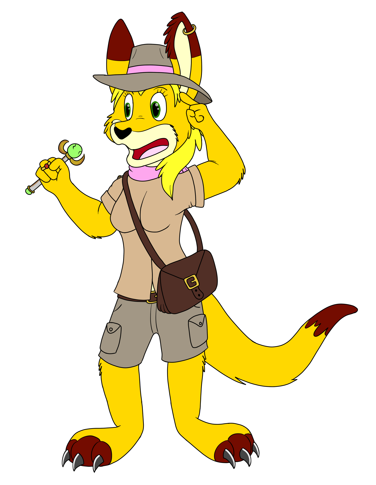

The Races of Casarok
Life on Casarok takes many different forms. The intelligent species are divided into three races while the rest of sentient life has their own set of three classifications.

The Anthros are the most common and diverse race of intelligent creatures in Casarok. They have the highest population and number of species among the three races. All members of this race are anthropomorphic animals, hence the name given to them. (The majority of them can be found in their feral variants on planet Earth, but there are a few species that are native only to Casarok.)
The Aspects are the intelligent race of Casarok created to be the avatars of the gods and goddesses. One species exists for each god or goddess. They usually possess unique qualities that separate them from their Anthro brethren. For example, avian Aspects have wings on their backs while Anthros have wing-arms. All species are anthropomorphic except for centaurs, wemics, and merfolk. Each species of the Aspect race has magic powers based on their matron or patron deity. (Each species is a mythological or fantasy creature.)
The Draconic race is the least common and diverse of Casarok's three races. There are only seven total species in this race and only six that exist throughout the majority of Casarok's history. All species are anthropomorphic save for two which are quadrupedal. They are born with a strict set of magical abilities, gifted to them by the gods and goddesses of Casarok early in the history of the world.
Feral is the classification for all non-magical non-intelligent creatures that evolved from the primordials. Many species in the feral classification have been domesticated. Several others are hunted for meat and other resources, though laws in the modern age prevent them from being overhunted.
Monster is the classification for all magical creatures, almost all of which have been deemed dangerous or extremely hostile. They are generally unable to be tamed and difficult to fight. Most of the populace considers them such a threat that there are rarely ever laws restricting them from being hunted.
Floradon is the classification for all highly evolved plant-based life in Casarok. They are creations of the gods Tempatrius and Domathair that are highly threatening, some nearly on par with the monsters of the world. Some are magical in nature while others are strictly bestial. A few of them, however, are docile and kept as pets similarly to some feral creatures.
All alien and unclassified lifeforms are categorized as Xenoids. There are many different subclassifications for this set of creatures.